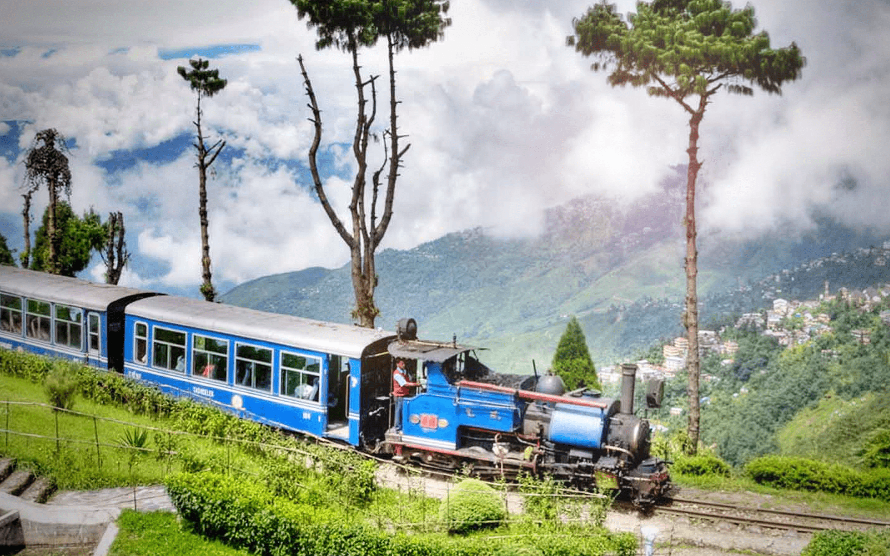

Each of these destinations offers a unique experience, combining natural beauty, adventure, and cultural richness.
Georgia:

Georgia, a country at the crossroads of Europe and Asia, offers a rich mix of history, culture, and stunning landscapes. Here are some of the best places to visit:
Tbilisi: The capital city of Georgia, Tbilisi is known for its charming old town with cobbled streets, ancient churches, and colorful houses. Visit the Narikala Fortress, Tbilisi Cathedral, and enjoy the thermal baths in Abanotubani district. The city also offers vibrant nightlife and rich Georgian cuisine.
Batumi: Located on the Black Sea coast, Batumi is a modern, cosmopolitan city with beautiful beaches, botanical gardens, and a charming seaside promenade. It's also home to the impressive Batumi Boulevard and futuristic architecture, such as the Alphabet Tower.
Kazbegi National Park: A stunning region known for the iconic Gergeti Trinity Church, perched high on a mountain with breathtaking views of Mount Kazbeg. This is a must-visit for nature lovers and trekkers seeking spectacular mountain scenery.
Vardzia: An ancient cave monastery complex carved into the cliffs of the Erusheti Mountain, Vardzia offers a fascinating glimpse into Georgia's medieval past. The site features intricate frescoes and tunnels that connect its numerous chambers.
Uplistsikhe: An ancient rock-hewn town that dates back to the early Iron Age, Uplistsikhe has unique cave structures, temples, and a theater. It’s an archaeological wonder offering insights into Georgia's ancient civilizations.
Wine Regions – Georgia is one of the oldest wine-producing countries in the world. Visit regions like Kakheti for wine tours and tastings in beautiful vineyard settings.
Georgia’s diverse landscapes and rich heritage make it a captivating destination for any traveler.
Turkey:
Turkey is a country rich in history, culture, and natural beauty. Here are some of the best places to visit:
Istanbul: The country’s cultural and historical hub, Istanbul offers iconic landmarks like the Hagia Sophia, Blue Mosque, Topkapi Palace, and the Grand Bazaar. It sits at the crossroads of Europe and Asia, blending East and West in its architecture, food, and culture.
Cappadocia: Famous for its otherworldly landscapes, including fairy chimneys, cave dwellings, and rock-hewn churches. A hot air balloon ride over the region at sunrise is a must-do for breathtaking views.
Ephesus: One of the best-preserved ancient cities in the world, Ephesus is home to the Temple of Artemis, one of the Seven Wonders of the Ancient World. The site also features a large ancient theater, the Library of Celsus, and other Roman ruins.
Pamukkale: Known for its unique white mineral-rich terraces formed by thermal waters, Pamukkale is a stunning natural wonder. Visitors can bathe in the warm, milky waters while enjoying views of the surrounding landscape.
Antalya: A beautiful coastal city along the Mediterranean, Antalya is famous for its turquoise beaches, ancient ruins, and charming Old Town (Kaleiçi). It’s a gateway to exploring the stunning Turkish Riviera.
Göbekli Tepe: Considered the world's oldest temple, this archaeological site dates back to around 9600 BCE and is a fascinating place for history enthusiasts.
Turkey’s blend of ancient history, breathtaking landscapes, and vibrant cities make it a top travel destination for diverse experiences.
Bali:

Bali, Indonesia, is a tropical paradise known for its stunning beaches, vibrant culture, and lush landscapes. Here are some must-visit places:
Ubud – The cultural heart of Bali, Ubud is famous for its rice terraces, traditional art, and yoga retreats. Visit the Sacred Monkey Forest Sanctuary and explore local markets for unique crafts.
Seminyak – Known for its upscale resorts, trendy cafes, and lively beach clubs, Seminyak offers a more luxurious experience. It’s perfect for shopping, dining, and enjoying Bali’s vibrant nightlife.
Uluwatu – A stunning coastal region, Uluwatu is famous for its dramatic cliffs, beautiful beaches, and the Uluwatu Temple, where you can watch mesmerizing Kecak dance performances during sunset.
Mount Batur – A popular spot for sunrise treks, Mount Batur offers stunning views of the surrounding caldera and Lake Batur. Hiking this active volcano is an unforgettable adventure.
Nusa Dua – A resort area known for its white-sand beaches and clear waters, Nusa Dua is ideal for luxury stays, water sports, and relaxation.
Tegallalang Rice Terraces – Famous for its breathtaking landscapes, these terraced rice fields in central Bali are perfect for photos and scenic walks.
With its mix of cultural richness, natural beauty, and vibrant tourism, Bali offers something for every type of traveler.
Jaipur:

Jaipur, the capital of Rajasthan, is a city of royal heritage, architectural grandeur, and vibrant culture. Known as the "Pink City" due to its distinctive terracotta-hued buildings, Jaipur offers an enriching experience with its rich history, stunning palaces, and lively bazaars.
1. Amber Fort: A magnificent hilltop fort, Amber Fort is a blend of Hindu and Mughal architectural styles. Its grand courtyards, intricate carvings, and beautiful Sheesh Mahal (Mirror Palace) make it one of Jaipur’s top attractions. Visitors can also enjoy an elephant ride to the fort.
City Palace: Situated in the heart of Jaipur, the City Palace is a majestic complex that includes courtyards, museums, and gardens. It reflects the city’s royal heritage and is still the residence of the current Maharaja of Jaipur.
Hawa Mahal: Known as the "Palace of Winds," Hawa Mahal is an iconic five-story structure with 953 small windows (jharokhas) designed to allow royal women to observe street life while remaining unseen. Its striking pink sandstone facade is a symbol of Jaipur.
Jantar Mantar: A UNESCO World Heritage site, Jantar Mantar is an astronomical observatory built by Maharaja Jai Singh II. It houses a collection of large, intricate instruments for measuring time, predicting eclipses, and studying celestial bodies.
Nahargarh Fort: Offering panoramic views of Jaipur, Nahargarh Fort is a popular spot for evening outings. The fort’s architecture and its step wells, along with the breathtaking sunset views over the Pink City, make it a must-visit.
Jaipur’s fusion of history, art, and culture, combined with its royal architecture, makes it one of India’s most captivating cities to explore.
Goa:

Goa, India’s tropical paradise, is renowned for its golden beaches, vibrant nightlife, rich Portuguese heritage, and laid-back charm. It attracts millions of visitors each year, offering a perfect blend of relaxation, adventure, and culture.
Baga Beach: One of Goa’s most popular beaches, Baga is famous for its lively atmosphere, water sports, beach shacks, and nightlife. It’s the perfect spot for both relaxation and partying.
Anjuna Beach: Known for its bohemian vibe, Anjuna is a favorite among backpackers and hippies. With its rocky coastline, vibrant flea market, and electronic music scene, it’s a hub for those seeking a unique, eclectic experience.
Dudhsagar Waterfalls: Located in the Bhagwan Mahavir Wildlife Sanctuary, Dudhsagar is one of India’s tallest waterfalls. Surrounded by lush forests, this majestic waterfall offers a serene and adventurous experience, especially for trekkers.
Basilica of Bom Jesus: A UNESCO World Heritage site, this 16th-century church in Old Goa houses the mortal remains of St. Francis Xavier. It’s a fine example of baroque architecture and a testament to Goa’s rich colonial past.
Palolem Beach: A quieter, picturesque beach in South Goa, Palolem is known for its crescent shape, clear waters, and relaxed vibe. Ideal for sunbathing, swimming, and kayaking.
Goa’s combination of beautiful landscapes, cultural landmarks, and vibrant energy makes it an ideal destination for all kinds of travelers.
Darjeeling:

Darjeeling, often referred to as the "Queen of the Hills," is a charming hill station located in the northeastern state of West Bengal, India. Known for its breathtaking views of the Himalayas, lush tea gardens, and colonial-era charm, it offers a perfect blend of natural beauty and cultural heritage.
Udaipur:
Udaipur, often called the "City of Lakes," is a stunning city in Rajasthan, India, known for its romantic ambiance, intricate palaces, and serene lakes. Surrounded by the Aravalli hills, Udaipur offers a blend of history, culture, and scenic beauty, making it one of the most sought-after destinations in India.
City Palace: Overlooking Lake Pichola, the City Palace is a majestic complex of courtyards, museums, and gardens. Its blend of Rajasthani and Mughal architecture, along with its opulent interiors, make it a must-visit landmark in Udaipur.
Lake Pichola: The serene Lake Pichola is one of Udaipur’s most iconic spots. A boat ride on the lake offers mesmerizing views of the City Palace, Jag Mandir Island, and the surrounding hills. It’s especially enchanting at sunset.
Jag Mandir: Situated on an island in Lake Pichola, Jag Mandir is a beautiful palace that offers a peaceful retreat. It was once a royal resort and is now a popular spot for boat rides and photography.
Sajjangarh Palace (Monsoon Palace): Perched atop a hill, Sajjangarh Palace offers panoramic views of the city and the surrounding lakes. It’s a perfect place to witness the sunset and enjoy the scenic beauty of the region.
Jagdish Temple: This 17th-century Hindu temple is dedicated to Lord Vishnu and is an architectural marvel with intricate carvings and sculptures. It stands as a symbol of Udaipur’s cultural and spiritual heritage.
Udaipur’s lakes, palaces, and serene surroundings, combined with its rich history and artistic heritage, make it one of India’s most picturesque and romantic cities.
Rishikesh:

Rishikesh, nestled in the foothills of the Himalayas along the banks of the Ganges River, is a spiritual hub and adventure destination in Uttarakhand, India. Known as the "Yoga Capital of the World," Rishikesh attracts travelers seeking peace, spirituality, and adventure, offering a unique blend of serenity, nature, and vibrant culture.
Triveni Ghat: A sacred bathing ghat on the banks of the Ganges, Triveni Ghat is renowned for its evening Ganga Aarti, where thousands gather to witness the mesmerizing rituals and offer prayers. The atmosphere here is spiritually uplifting.
Laxman Jhula and Ram Jhula: These iconic suspension bridges span the Ganges and are steeped in mythological significance. Laxman Jhula, associated with Lord Rama’s brother Laxman, offers panoramic views of the river and surrounding hills.
Neelkanth Mahadev Temple: Situated about 12 km from Rishikesh, this ancient temple dedicated to Lord Shiva is set amidst the forested hills. It is an important pilgrimage site and offers a tranquil escape from the city’s bustle.
Rajaji National Park: Located just outside Rishikesh, Rajaji National Park is a haven for wildlife enthusiasts. The park is home to tigers, elephants, leopards, and a variety of bird species. It’s ideal for a nature walk or a safari experience.
Yoga and Meditation Ashrams: Rishikesh is famous for its ashrams, where travelers come to learn yoga, meditation, and spiritual teachings. The Parmarth Niketan and Sivananda Ashram are among the most well-known, offering tranquil settings for spiritual rejuvenation.
Rishikesh's spiritual allure, coupled with its stunning natural beauty and adventure activities like white-water rafting and trekking, makes it an exceptional destination for those seeking peace, adventure, and self-discovery.
Pondicherry:
Pondicherry, often referred to as "Puducherry" (its official name), is a coastal town in southern India known for its French colonial heritage, serene beaches, vibrant culture, and spiritual ambiance. With its distinct blend of French architecture, quiet streets, and natural beauty, Pondicherry offers a perfect retreat for travelers seeking relaxation and exploration.
Promenade Beach: One of Pondicherry’s most popular attractions, Promenade Beach stretches along the coastline and offers beautiful views of the Bay of Bengal. Visitors can enjoy a peaceful walk, watch the sunset, or simply relax by the sea. The beach is lined with colonial-era buildings and is a perfect spot for a leisurely evening.
Auroville: Auroville, an international township founded in 1968, is dedicated to human unity and peace. The centerpiece of Auroville is the Matrimandir, a stunning golden dome that serves as a meditation center. Auroville’s peaceful atmosphere, spiritual practices, and community-driven lifestyle make it a unique and enriching experience.
Sri Aurobindo Ashram: Located in the heart of Pondicherry, the Sri Aurobindo Ashram is dedicated to the teachings of Sri Aurobindo and the Mother. The ashram offers a tranquil environment for meditation and spiritual growth, attracting people from around the world.
French Quarter: The French Quarter, with its charming colonial architecture, narrow streets, and vibrant bougainvillaea, is a delightful area to explore. The French influence is evident in the town’s whitewashed buildings, pastel-colored facades, and quaint cafes, providing a glimpse of Pondicherry’s colonial past.
Paradise Beach: Accessible by boat, Paradise Beach is a pristine stretch of sand surrounded by lush greenery. Its crystal-clear waters, clean shores, and tranquil atmosphere make it an ideal place for swimming, sunbathing, and relaxing away from the city’s hustle and bustle.
Pondicherry’s unique combination of French heritage, spiritual retreats, beautiful beaches, and vibrant local culture makes it a top destination for those seeking both peace and adventure.